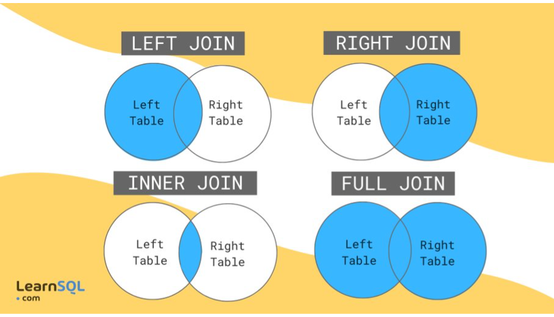

sql_101
JOIN
Descrição
Os comandos de JOIN servem para unir tabelas a partir de uma relação de campos, em que cada tipo de join preservará os registros a partir de uma condição de uma ou de ambas as tabelas.

Sintaxe/exemplo
Para usar o JOIN usamos da seguinte sintaxe:
(tipo de SQL) + JOIN + (tabela a ser juntada) + ON + (equivalência de chaves)
LEFT JOIN
Descrição
O comando LEFT JOIN é usado para combinar linhas de duas tabelas com base em uma coluna comum, incluindo todas as linhas da tabela esquerda e apenas as linhas correspondentes da tabela direita.
Sintaxe/exemplo
Vamos adicionar o nome da raça na tabela animais, para tal vamos identificar primeiro quais as chaves de cada tabela.
SELECT
racas_id AS raca_id,
r.nome AS raca_nome
FROM animais a
LEFT JOIN racas r ON a.racas_id = r.id
;No exemplo acima, fazemos a junção das tabelas animais e racas com seus respectivos alias a e r, em que equivalemos os campo a.racas_id (chave estrangeira) a r.id (chave primária)
RIGHT JOIN
Descrição
O comando RIGHT JOIN é usado para combinar linhas de duas tabelas com base em uma coluna comum, incluindo todas as linhas da tabela direira e apenas as linhas correspondentes da tabela esquerda.
Sintaxe/exemplo
Não é tão usado, pois pode gerar o mesmo resultado do LEFT JOIN, vamos replicar o exemplo anterior:
SELECT
racas_id AS raca_id,
r.nome AS raca_nome
FROM racas r
RIGHT JOIN animais a ON a.racas_id = r.id
;INNER JOIN
Descrição
O comando INNER JOIN é usado para combinar linhas de duas tabelas com base em uma coluna comum, incluindo todas as linhas em comum das duas tabelas.
FULL JOIN
Descrição
O comando FULL JOIN é usado para combinar linhas de duas tabelas com base em uma coluna comum, incluindo todas as linhas em das duas tabelas, independente se existir vínculo entre as tabelas, em que os campos sem vínculo ficarão nulos.
UNION
Descrição
O comando UNION é usado para combinar os resultados de duas ou mais consultas SELECT em uma única tabela resultante.
O comando UNION remove linhas duplicadas do resultado final, a menos que a palavra-chave ALL seja usada.
Sintaxe/exemplo
Vamos selecionar os animais que passaram por uma aplicação sanitária ou que foram movimentados.
SELECT va.animal_id, 'sanidade' AS tipo
FROM vacinacao_animais va -- Tabela de aplicações sanitárias
UNION -- Empilha os dados
SELECT DISTINCT(am.animal_id), 'movimentação' AS tipo
FROM animais_movimentacoes am -- Tabela de animais movimentados
;Subquery/Sub-consulta
Descrição
É uma consulta aninhada dentro de outra consulta. Ela pode ser utilizada no SELECT, FROM ou WHERE.
Sintaxe/exemplo
Vamos calcular a quantidade de animais por status, o total e a porcentagem por status
SELECT
a.status,
COUNT(*) as animais_status,
(SELECT COUNT(*) FROM animais) AS total,
100*COUNT(*)/(SELECT COUNT(*) FROM animais) AS perc
FROM animais a
GROUP BY a.statusFunções condicionais
CASE_WHEN
Descrição
O comando CASE_WHEN é uma forma de criar expressões condicionais em uma consulta, permitindo que você especifique uma série de condições e retorne um valor diferente para cada condição.
Sintaxe/Exemplo
SELECT
CASE
WHEN dt_nascimento IS NULL THEN dt_register
ELSE dt_nascimento
END AS dt_nasc
FROM animais
WHERE dt_nascimento IS NULL
;No exemplo acima quando o campo dt_nascimento é nulo o valor retornado é o do campo dt_register, caso contrário mantém-se a o valor do campo dt_nascimento.
Neste caso só existem dois cenários, porém podemos colocar quantos cenários e condições quisermos.
COALESCE
Descrição
O comando COALESCE pode ser visto como uma caso específico do CASE_WHEN, em que a condição a ser avaliada é a de valor nulo, logo podemos replicar o exemplo anterior com ela.
Sintaxe/Exemplo
SELECT
COALESCE(dt_nascimento,dt_register) AS dt_nasc
FROM animais
WHERE dt_nascimento IS NULL
;